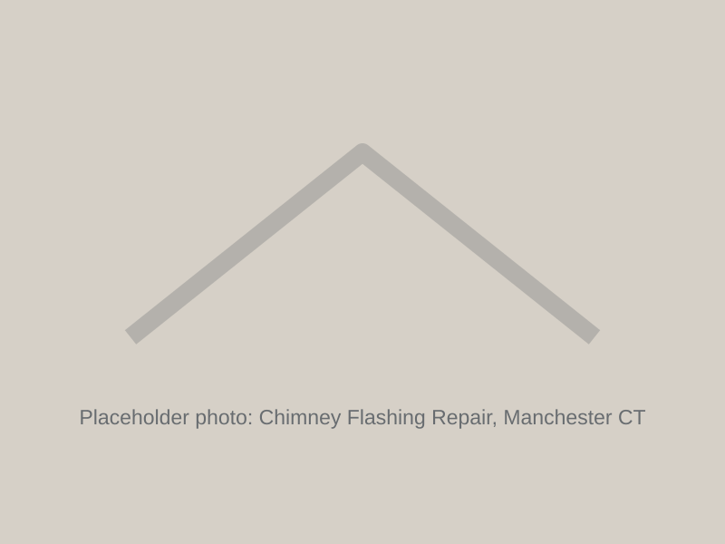
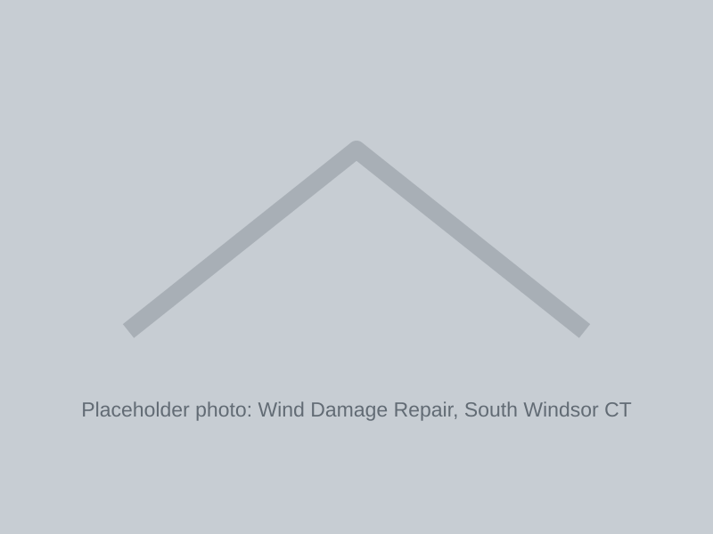
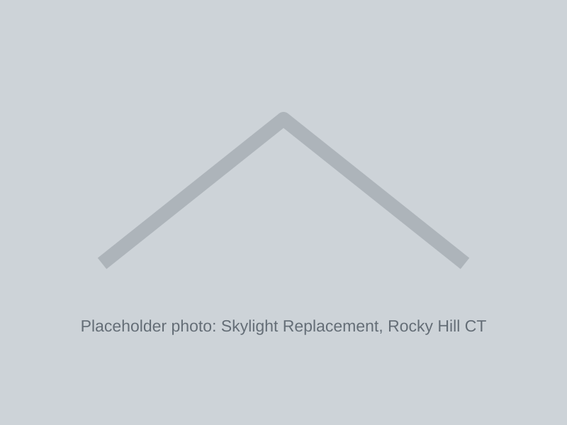
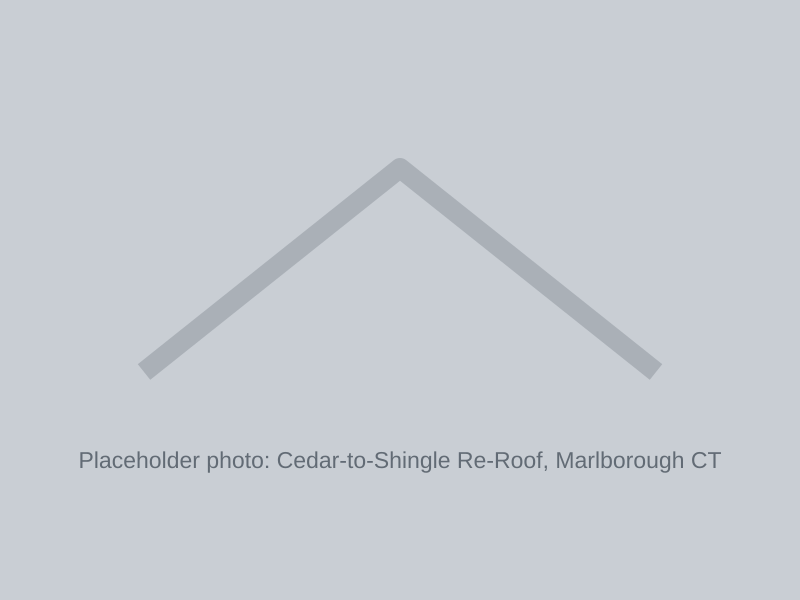
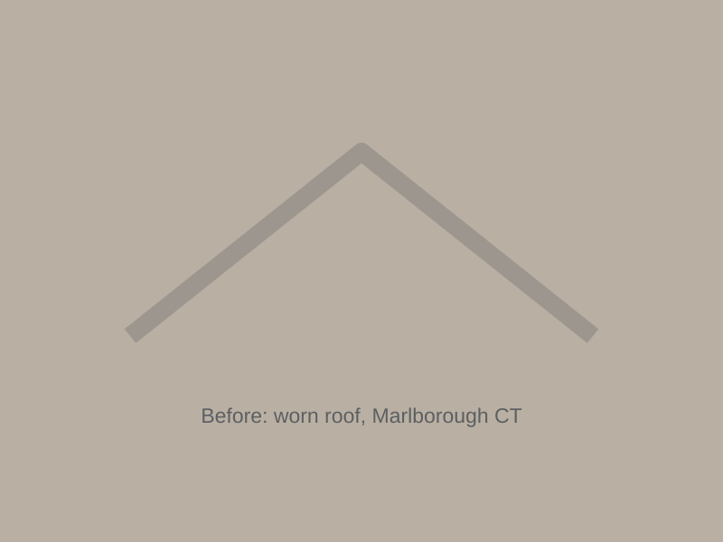
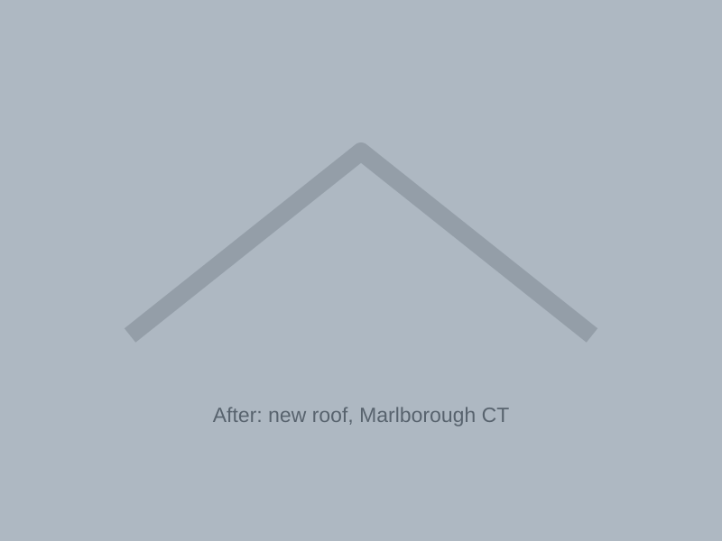
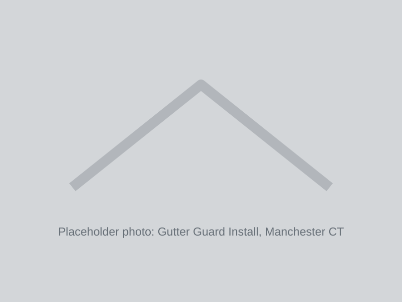
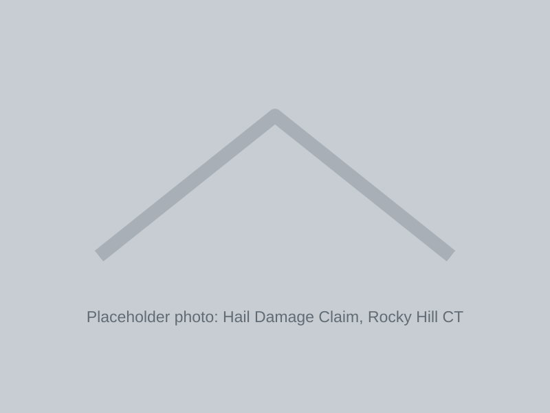

Past Work
A sample of recent roofs around Glastonbury and Hartford County. Tap any project for details, or filter by service type.
Project gallery
-

Full Roof Replacement Glastonbury, CT Project details

 Before
After
Before
After
Two layers of old 3-tab shingles torn off down to the deck, rotted sheathing replaced, and a new architectural shingle system with ice & water shield and ridge vent installed in two days.
-

Chimney Flashing Repair Manchester, CT Project details
A slow leak staining the upstairs ceiling traced to failed chimney flashing. New step and counter flashing, sealed and tested the same afternoon.
-

Wind Damage Repair South Windsor, CT Project details
Tarped the night of the storm, documented the damage with photos for the adjuster, and replaced 14 squares of shingles once the claim was approved.
-

Seamless Gutters & Guards Wethersfield, CT Project details
Sagging sectional gutters replaced with 6-inch seamless aluminum gutters, oversized downspouts and micro-mesh guards.
-

Skylight Replacement Rocky Hill, CT Project details
Two fogged, leaking skylights replaced with new flashed units during the roof replacement so they will not leak for the life of the roof.
-

Cedar-to-Shingle Re-Roof Marlborough, CT Project details


Before AfterA 30-year-old cedar roof replaced with architectural shingles in a weathered-wood color, plus new drip edge and attic ventilation.
- Get a Free Roof Estimate
-

Pre-Sale Roof Inspection Glastonbury, CT Project details
A 21-point inspection with a photo report for a homeowner preparing to sell. Two small repairs, no surprises at closing.
-

Gutter Guard Install Manchester, CT Project details
Micro-mesh guards added to sound existing gutters under a row of oak trees. No more ladder cleanouts each fall.
-

Hail Damage Claim Rocky Hill, CT Project details
Met the adjuster on site, walked them through the hail strikes, and replaced the full roof once the claim was approved.